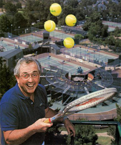

Previous: What Is Choking? | 🏠 Mental Game Home | Next: What is Confidence? (Part 2)
What is Confidence?
Comprehensive unified tennis knowledge base — Fundamentals, Stroke Analysis, Reference Library, and more
What is Confidence?
By Craig Kardon

Confidence means learning to believe your game will be successful.
Confidence in tennis, as in anything else, is the ability to have faith in yourself. It's your belief in yourself and the belief your game will be successful no matter what the circumstance.
When you go into a match being confident, it doesn't really matter how the pendulum swings during the match. Let's say you get into a rally and you hit your best shot, but your opponent gets it back and hurts you with his reply. When you're confident, that doesn't seem to bother you. You know in the long run that that's only a brief intermission in the way things are going to happen.
Confidence means you believe in your shots, no matter what goes on the other side of the net. A lot of players will go for the shot, but at the last minute, there's not that belief. To make it work you have to let go of the outcome and just trust the stroke and believe that it's going to work. In the long-term, you believe you will win for the simple reason that you believe in yourself.
Shot Confidence
It's important to understand that having confidence is not just a matter of the quality of your shots. A player I worked with, Xavier Malisse, would get on a roll and be fantastic. He had a great forehand, great movement, played really deep defense.

Even with a big forehand, confidence can suddenly fade.
But if a guy got back some of those huge forehands, or got really aggressive, or won what appeared to be a few lucky points, sometimes his whole game would change. He would lose confidence and begin to play very passively. So the whole direction of the match could change just because an opponent got back one or two shots.
You can often tell when your opponent is confident by the way they react to your best shot. Let's say you get in an exchange, their best against your best, and you happen to win that exchange. The unconfident opponent will show signs of visible frustration, maybe rushing into the next point, maybe talking to himself, questioning line calls, or changing the exchange in the next rally. These are signs he doesn't believe that his best can go against your best. So there are visible signs that you can pick up to see when your opponent is not confident.
Here's another example. You're playing a guy with a great forehand, it's in the third set, and you get into a long game, and all of a sudden that guy with the great forehand, he's just putting the ball into play, he's not ripping it anymore. That would indicate to me that he's not confident, that you can pretty much go after hisbest shot. You feel that you can be a little more aggressive, and you're going to get errors. That's a visible sign of your opponent not being as confident as you might assume.
Visible frustration shows a lack of confidence.
Good Decisions
Confidence leads to good decision making. When two players are playing very well, it's the players who handles his own emotions and trusts himself to hit the right shot at the right moment that usually wins. When it gets really close, you have to have the clarity of mind that goes with being able to do that.
For these reasons, confidence plays a huge role in the outcome of pro matches. This is true in men's tennis especially, because the game is so powerful. In men's tennis, momentum can change pretty quickly. Because there's more power involved there is a smaller margin between two opponents. If you lose confidence just for a split second and you lose your serve, then you've lost the set. In women's tennis, the emotions are just different. They're very strong and there can be extreme swings. You see women's players coming back from 5-1 down and still winning.
In men's tennis, the players hide their emotions a lot more. Sometimes it's really tough to say just from looking at two opponents, who's really more confident. In women's tennis, you can just tell more easily by watching, who is hitting the ball harder, who is more confident. It's all a bit more visibly apparent.

In women's tennis, the emotions can be more transparent.
In women's tennis there are a lot more breaks to serve, and there are often way more swings between two opponents during a match. This means there is more room for swings in confidence and for players to recover from them.
Protecting Confidence
To win matches, you need to protect your confidence as much as you can, and get the most out of it when you have it. Champions know how to protect their confidence and champions know how to use their confidence to their advantage. Every player needs to find a way to ride their confidence and get as many games won during that stretch as they possibly can.
As a coach, you have to recognize when your player is confident and make him recognize the factors why. What shots are you confident in? What tactical patterns work for you when you're confident? And do those shots and patterns work against any opponent?
The most important thing in protecting confidence is actually not becoming overconfident, and then starting to take things for granted. Champions do the ordinary things better than anybody else. By ordinary things I mean first serve percentage, putting returns of serve in play, not making unforced errors at the wrong times. You can't play loose points when you're confident. This is one very important way of protecting your confidence - don't give away points no matter what.

Be aggressive with your footwork - no matter what.
Aggressive Movement
Another way of protecting your confidence is to be aggressive with your movement. Never get lazy during a point. Even if you know you can get to the ball in plenty of time and still hit a winner, you still want to move efficiently and aggressively no matter what the situation is.
Another key: make sure you put the ball away. On the overhead, even if the opponent is out of play, you still play the overhead into the stands, because that shows confidence. That protects your confidence and it sends a message to your opponent.
Confidence comes from your repeated success and how you value that success with yourself. When I worked with Martina Navratilova she was a great example of this. She was a great front runner. When she would get on a roll, she would keep coming and she would just bury opponents, just bury them.

Put the ball away with authority.
Being confident also means having flexibility. You have to ask the player what happens when the opponent gets his best shots back? What happens if a pattern doesn't work? Are you going to still be confident? Are you still confident in your decision making abilities? If things aren't going your way, can you go to Plan B? You have to help your player be confident in their decision making, and also help them be confident in a Plan B game plan.
Regaining Confidence
Of course players aren't confident all the time, and for a variety of reasons. As a coach you also have to find a way to help players regain confidence when they lose it.
Here is one example with another top player I was coaching. She was playing against a young player she had never faced on a very hot day. She simply wasn't playing her best, and I could tell, was focusing on the negative. There was a rain delay and she started complaining about all the errors that she was making.
Keep track of the points you are winning, and how.
So I asked her, have you been keeping track of all the winners you're getting? Are you keeping track of the points that you're winning and how you're winning them? And she stopped complaining, and after the rain delay, the pendulum started to turn.
The moral of that story is to keep track of the points you're winning when you're not confident, not the points you're losing. Focus on the positive things you're doing on the court, not the negative things. Sometimes those positive things will start happening a bit more often because you're focusing on them.
Another example. I coached a player who loved to look at his statistics all the time, comparing his game and his stats over the years. You know, in 2008, I was doing this, and I hit a high percentage of second serve return winners, etc.
He might look at a whole year's worth of statistics, and if his numbers were up there, then his confidence went up. But what was interesting was what happened when his statistics were lower - even if he was winning matches at the time.

Focus on the positive things you are doing on court, not the negative.
He would look at things that didn't seem to have anything to do his results. He might be winning but then look at his statistics, and decide well, I'm not returning well. Even if his ranking was going up, he wasn't happy because he was not up there in the return category, or whatever. And of course then his results would start to go down.
If you are going to study the statistics, you have to look at them in a way that is going to build your confidence. For instance if you have a player who is holding serve a high percentage of time, he should feel freer to play more aggressively on the return games. Or if you're a consistent backcourt player, and see you're only making 5 unforced errors in a set, that's a pretty good number that should make you feel more confident.
Assumption and Belief

Loss of confidence is a disbelief in success.
As a coach, you have to break down the reality of the situation. Confidence is an assumption or a belief that things are going to go your way. When you're not confident, you're assuming things are not going to go your way. That belief can be what's causing you to be too passive, or maybe that's what's causing you to overhit.
Basically, a loss of confidence is a disbelief in success in the future. When you're confident, the things that you do well in the present allow you to believe things are going to be better off in the future.
Structuring Success
But when you have lost this belief how do you get it back? The basic idea is to structure things to put the player in successful situations. You can work on something new, different patterns of play, for example, and build up confidence in that way.
But probably the best way to do this is to put yourself in winning situations, and this means organizing things so that your player meets other players you know they can beat.

Why did Bill Scanlon play local pro events?
A great example is what a former top ten player Bill Scanlon would do. Scanlon beat John McEnroe and had a winning record against Boris Becker. But once or twice a year he would play a local men's open tournament. The draw was filled with local pros. It was like about a hundred bucks to the winner.
I used to practice with him quite a bit in Dallas, and I asked Scanlon, why in the world would you do that? You're going to kill these guys. His answer was that it created confidence. He said it was an opportunity for him to stay mentally strong and keep doing the things he normally tried to do in matches. But against lower level players he could do them more easily and more often.
So he created situations where he could have repeated success and build his confidence. Then, when he faced similar situations in tour matches where he really needed to be confident, he had those experiences to draw on. He might have to just complete one point sequence at a critical time to make the difference in a match. That increased confidence could be the key.
My advice to club players is to do the same. When you are not confident, you need to put yourself in more situations where you know you are going to have success. Play lesser players. Try to really concentrate and beat someone 6-0, 6-0. Not too many club players would think of that. People think they can only get better playing against better players. But that is only partially true. If you are serious about rebuilding or increasing your confidence, you need to do what Bill Scanlon did and find a way to execute the shots you need over and over.

Tommy Haas pumped himself up to build confidence at the French.
Tommy Haas
Another example of how to build your confidence is the match Tommy Haas, played at the French Open this year, versus Leonardo Mayer in the round of 32. It was a 5-set match. Mayer is a younger guy who hit the ball way heavier than Tommy, with a huge serve. But he didn't have as much patience or experience as Tommy did.
Tommy was not that confident and wasn't playing his best. It would have been very easy for him to get upset, watching all those missiles fly by, knowing he could play much better himself.
But he did a very smart thing. He didn't show a lot of emotion when he was losing. When the guy overpowered him, he just didn't let it bother him. But when he played a good point and hit a winner or got an error, he would really pump himself up.
He was sending a message to the other guy. Maybe on a different day or against a different opponent, Tommy wouldn't have needed to do that. The point is he found something positive to build his confidence on. Literally he was able to change the way he felt during the match. It was like he expected good things to happen, and they happened.

Recognize the opportunity to believe when you do something good.
Players sometimes don't recognize those opportunities. You have to recognize when you've done something that is very good in a given situation, pat yourself on the back, and believe that you can do it again when the situation is right.
Again, my advice club players, if you want to get create confidence, then you have to do the same kind of things. You have to focus on the positive and tell yourself that when good things happen, you can make them happen again.
Next, I'll tell the story of my work coaching Ana Ivanovic and how all these issues about confidence relate to her game and the ups and downs talented players sometimes experience at the top of the game.

Craig Kardon is the touring coach and professional at the Four Seasons Resort and Club in Irving, Texas. He is also the coach of the Philadelphia Freedoms in World Team Tennis. As a tour coach he has worked with many of the world's top players, including Martina Navratilova, whom he coached to multiple Grand Slam titles, as well as Jennifer Capriati, Xavier Malisse, and Ana Ivanovic.
Craig can be contacted directly at: Clkardon@aol.com.
Additional figures (from header/footer of source docx):


Source: tennisplayer.net archive — What is Confidence 2.docx (John Yandell teaching library, 2002-2022). Extracted and rendered as HTML for Tennis Future Lab.